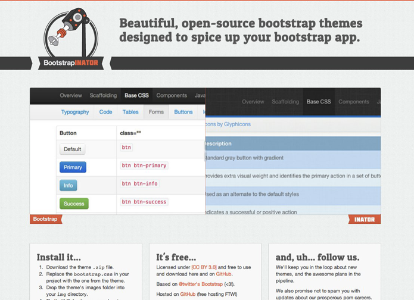
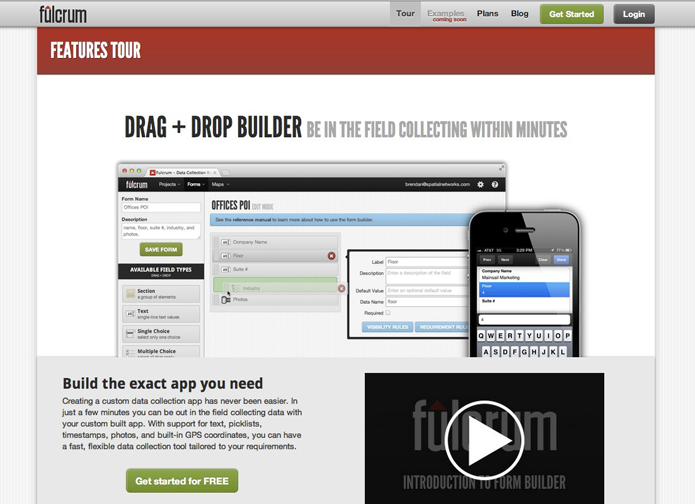
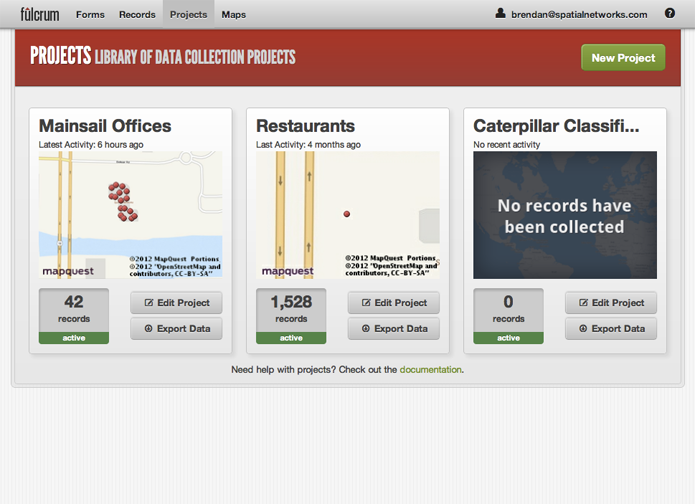
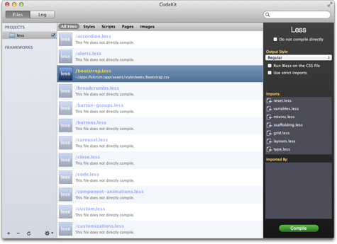

Hello, I'm Brendan Saunders
I'm a UI Designer / Front End Coder who loves to code smart & elegant solutions to interesting problems. I build solid front-end interfaces for websites and web apps by utilizing HTML5 / HAML, CSS3 / SASS, JQUERY, RAILS & GIT as more than just buzzwords.
Some Recent Projects
- BootstrapinatorBeautiful, open-source themes for twitter's bootstrap.
- Fulcrum App - marketing siteA cloud-based data collection tool for mobile devices.
- Fulcrum AppThis version shown is currently unreleased.
- This SiteHosted on GitHub Pages.
Unique Qualities
- I don't fear the command line.
- Like all designers, I love a well-designed and intuitive interface but, unlike some of my designer buddies, I'm not afraid to pop over to iTerm and run a few commands when needed. For instance, I can run a
bundle install, and can evencommit,merge,push, &pullwith the best of 'em. - I know my way around a rails app.
- I'm not a back-end developer by any stretch of the imagination, but that doesn't mean I don't know rails. I am well-versed in how a rails app is built, and I can rock some
Hamlviews (ERBtoo). I even know how to use some rails built in helpers (truncate,pluralizeandimage_tagare some of my favorites.) - I'm a fan of CSS pre-processing.
- Sass, or Less, doesn't matter I love them both. Variables and mixins are invaluable to helping me build beautiful CSS3 interfaces. With
SCSS, andLESSfiles utilizing a syntax that is a superset of CSS, I see no reason not to be using a pre-processor for even the smallest of projects that could be DRY'd up.
Tools I Use
- Sublime Text 2
 Where the magic happens.
Where the magic happens. - SkitchFor quick sharing of ideas.
- GitHub for Mac
 Version control is just smart.
Version control is just smart. - DispatchRelevant feedback is important.
- PhotoshopPixels are my friends.
- CodeKitFor pre-processing the smart way.
Where I'm Headed
There's always room to grow, and I'm very passionate about learning new things. I'm typically able to pick up new skills quickly, and I love to constantly expand my horizons. Most recently I've been brushing up on JavaScript & CoffeeScript via Codecademy (690 points!) (core JS), and Code School (jQuery + CoffeeScript). I've also dabbled a bit in Backbone.js, and I'm itching to build something really cool with it.
Keep In Touch
- Twitter: @blue642
- Forrst: bluesaunders
- Dribbble: Blue642
- GitHub: bluesaunders